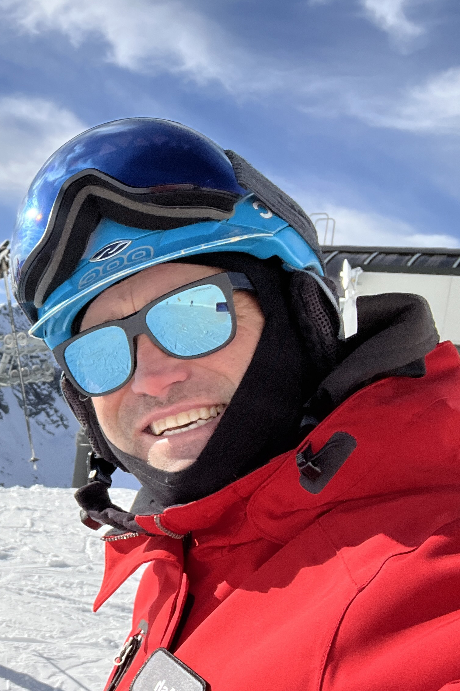
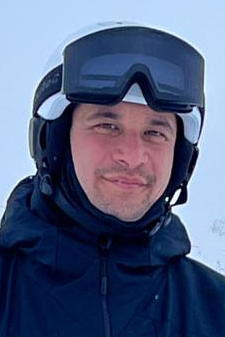
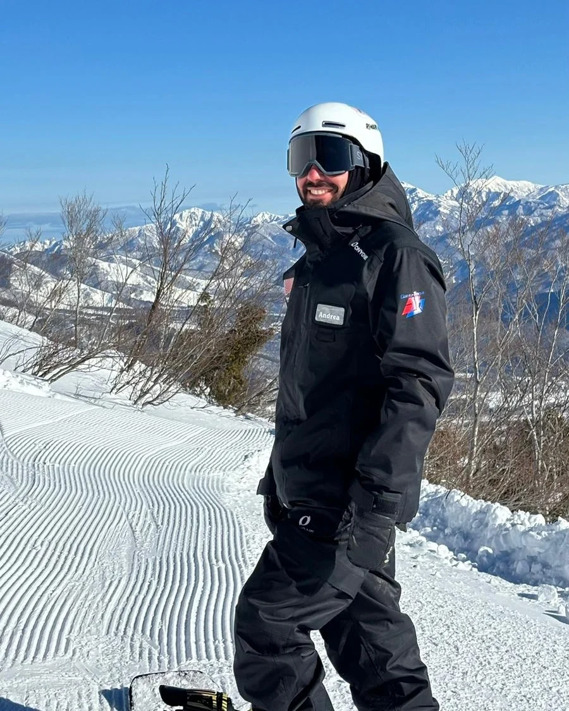
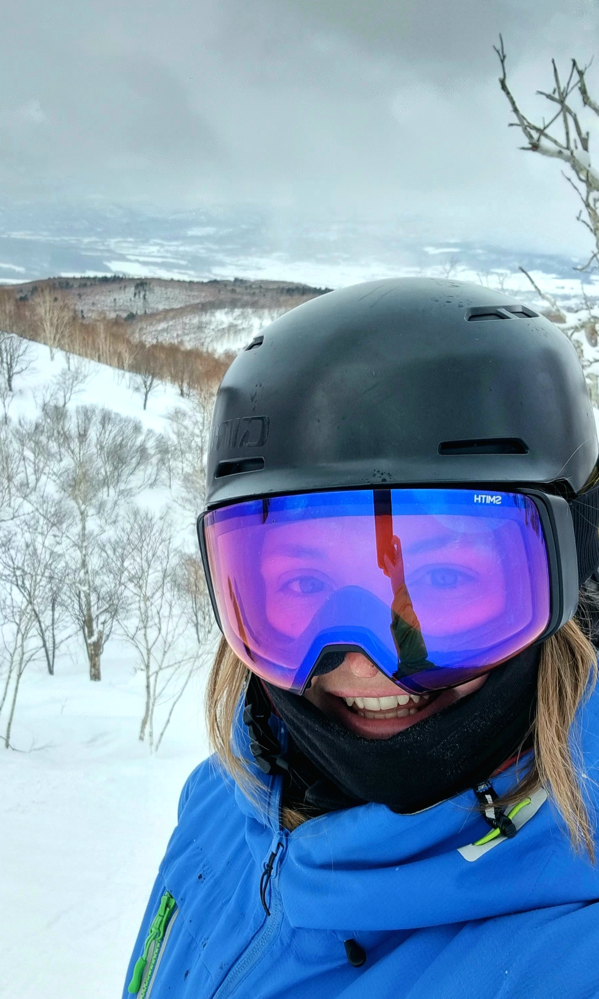

The Remarkables
Freeride paradise with beginner to expert terrain.
Queenstown · New Zealand
Premium private instruction at The Remarkables and Coronet Peak, tailored to your ability, group, and goals.
New Zealand
Queenstown is New Zealand's adventure capital and home to two world-class ski mountains — The Remarkables and Coronet Peak. Whether you're a first-timer or an experienced rider, our Diamond Pro instructors know every run, every condition, and every hidden gem on the mountain.
Freeride paradise with beginner to expert terrain.
Iconic rollercoaster terrain and night skiing.
Rental equipment is available at both base buildings, with local dining, transport, and accommodation recommendations included.
The season runs from mid-June through early October. Our Pros also operate in Niseko, Japan during the northern winter.
View QT Pricing →The people
Experienced instructors who make every session personal.




Queenstown pricing
9:00am–3:30pm · Up to 4 guests
9:00am–3:30pm · Up to 6 guests
Morning or afternoon · Up to 6 guests
*Indicative NZSki product pricing. Final price and availability confirmed when booking.
June — October